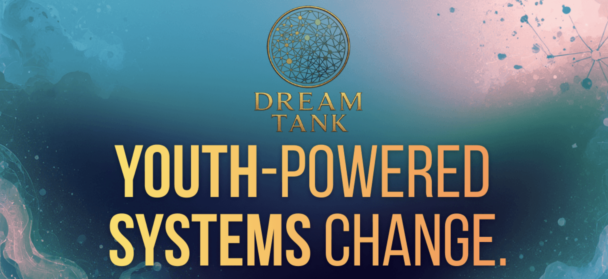
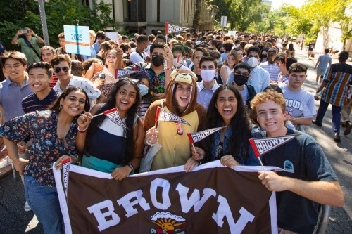
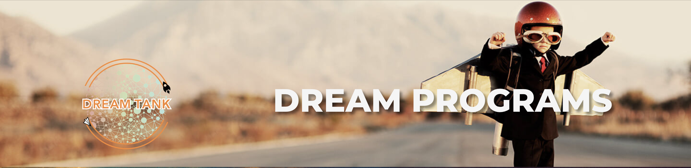
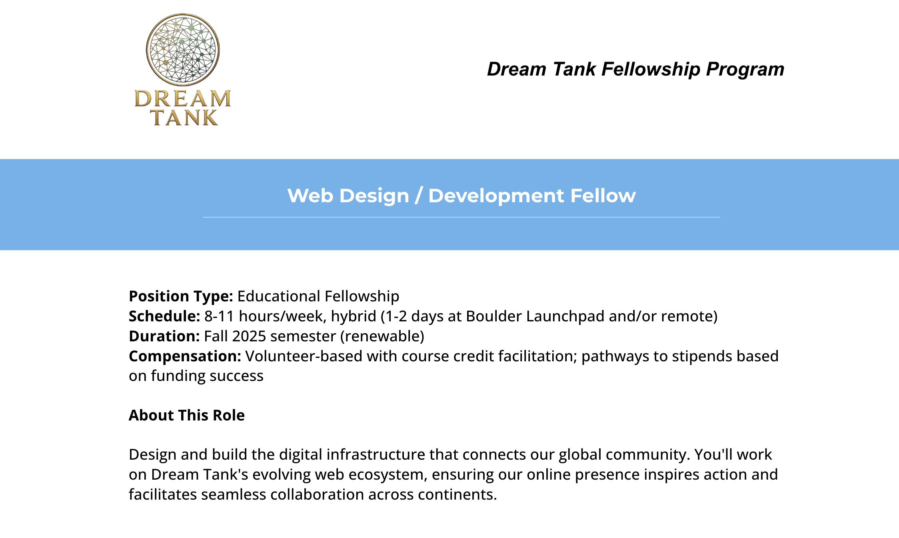
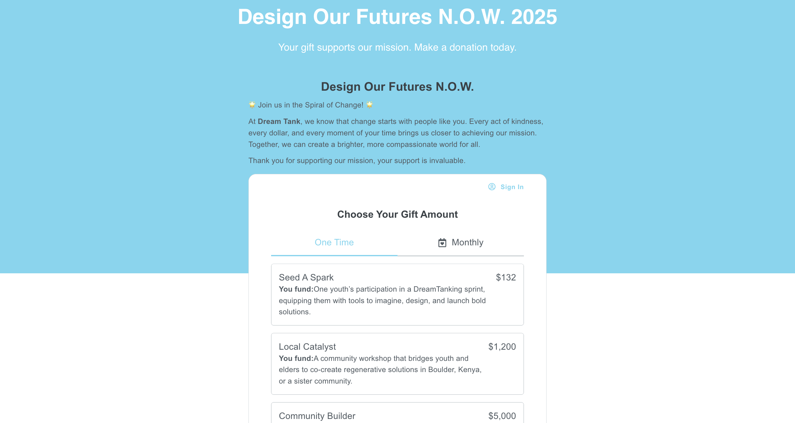
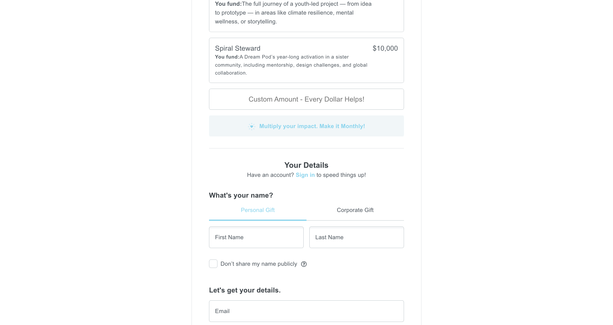
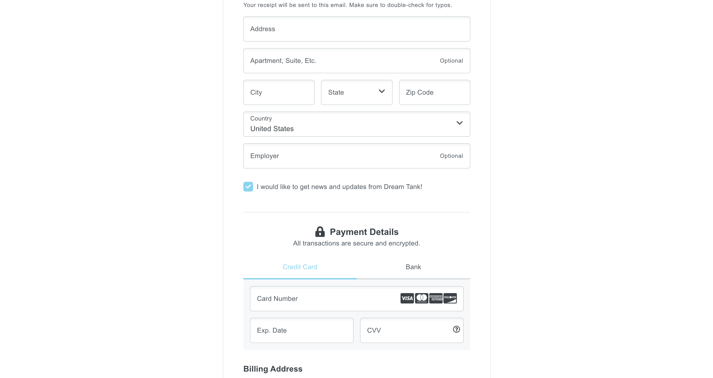
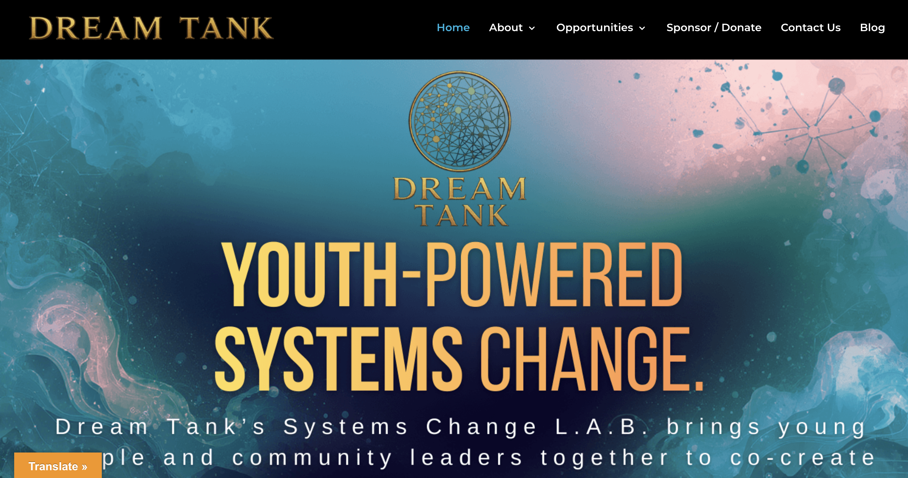
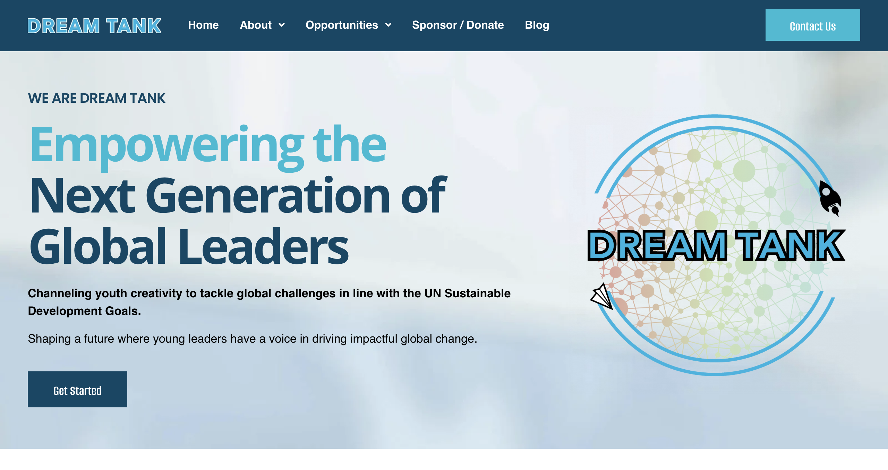
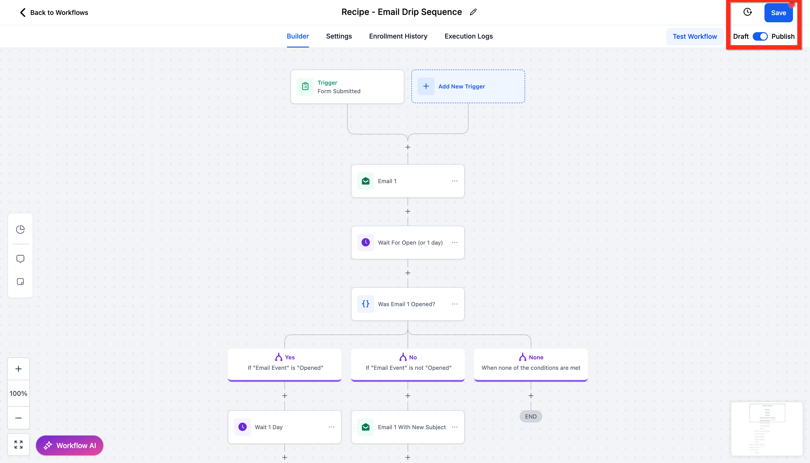

My Experience Building Digital Infrastructure at Dream Tank

In Fall 2025, I joined Dream Tank as a Web Design / Development Fellow, contributing to a global youth innovation organization focused on solving large-scale societal challenges through creativity, technology, and systems thinking.

Dream Tank is an international think tank and fellowship network that empowers young people to collaborate on solutions aligned with the United Nations Sustainable Development Goals (SDGs). The organization brings together students, entrepreneurs, educators, technologists, and policymakers to co-create initiatives focused on sustainability, education, climate action, civic innovation, and youth leadership.

Young people are not just the leaders of tomorrow — they are the leaders of today.
My Role
As part of the fellowship, I worked on Dream Tank’s digital infrastructure and online experience, helping support the organization’s outreach, engagement, and fundraising efforts.
My primary contributions included:
- Developing responsive landing pages and campaign pages
- Building and improving donation portals
- Supporting platform migrations and digital infrastructure updates
- Collaborating with marketing and operations teams on outreach initiatives
- Assisting with CRM and email marketing workflows through GoHighLevel







The role combined technical web development work with mission-driven communication and user experience design, requiring close collaboration with both technical and non-technical teams.
Final Thoughts
Dream Tank was a valuable experience where I met many interesting and passionate people. Most of the individuals involved contribute their time because they genuinely believe in the organization’s mission and vision for improving the future through youth empowerment and education.
The environment was extremely collaborative and optimistic, centered around creativity, innovation, and building systems that could positively impact future generations.
Throughout the fellowship, I worked with many different personalities and teams, translating their ideas and goals into functional digital experiences using my technical background in web development and software engineering.
The experience strengthened both my technical and communication skills while showing me how technology can support mission-driven organizations operating on a global scale.